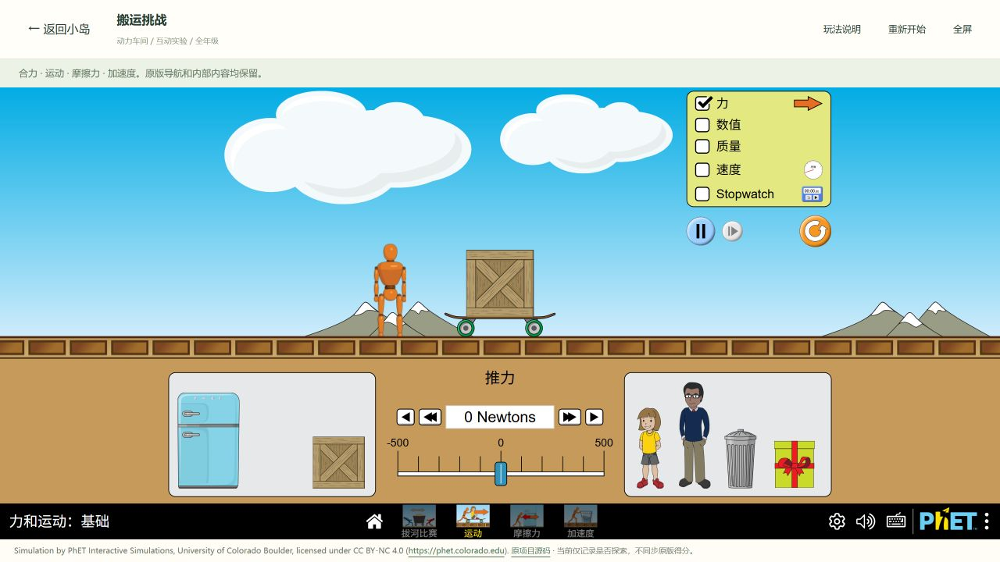
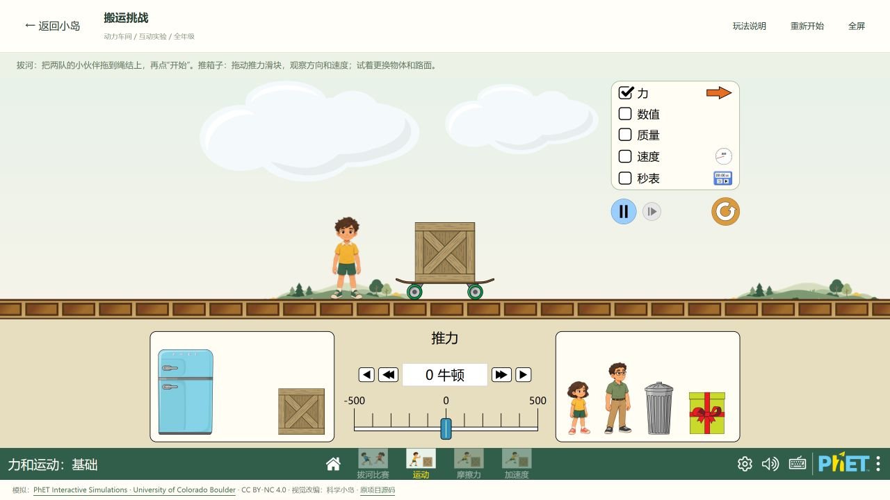
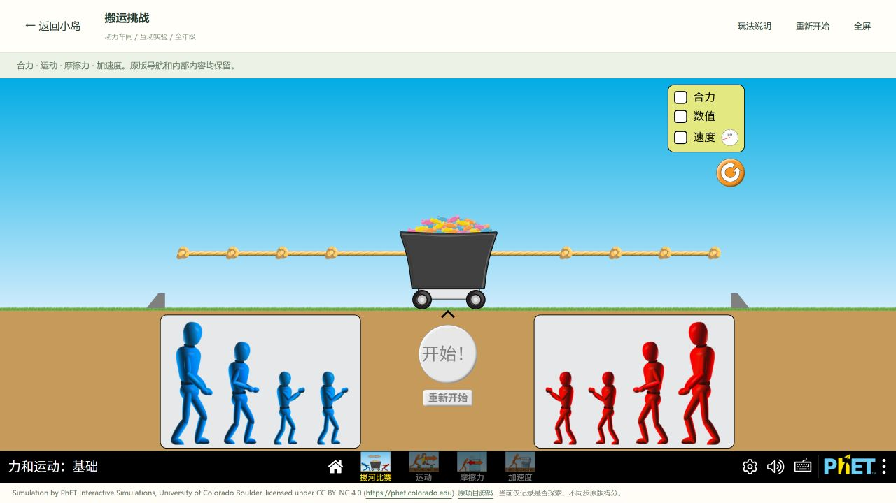
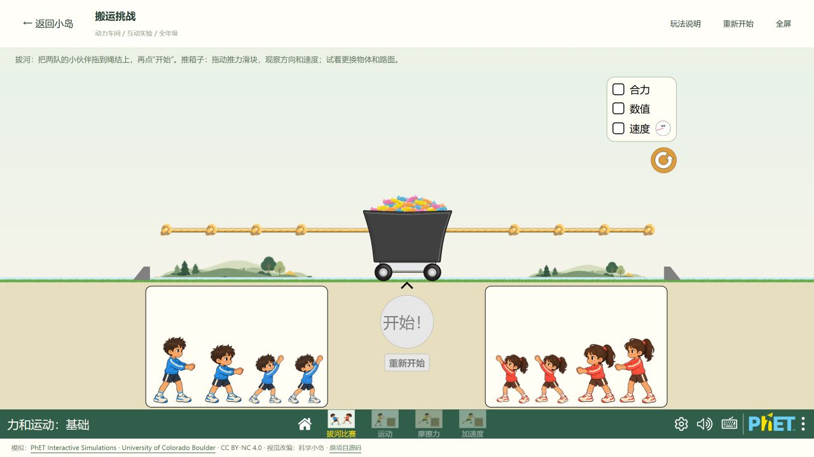
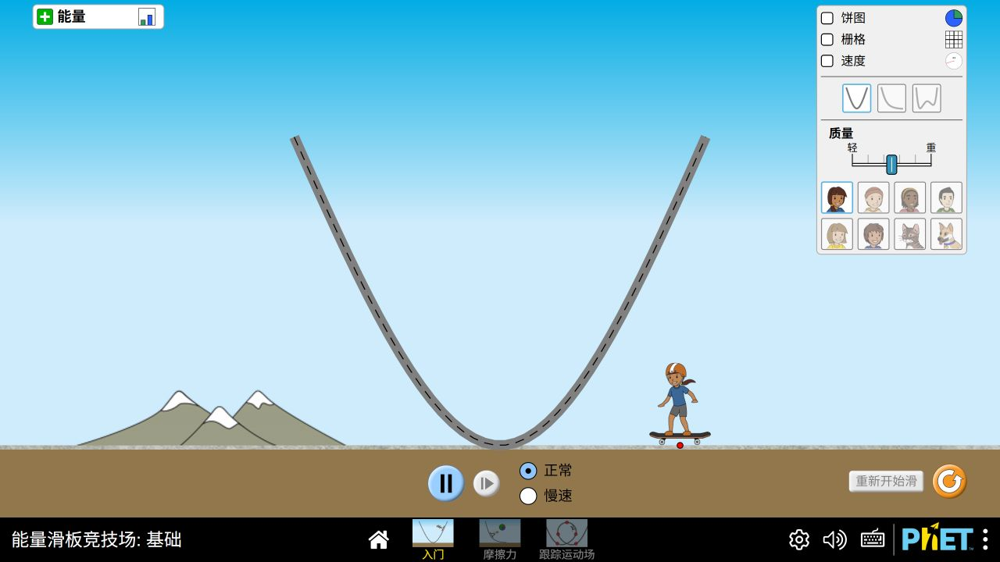
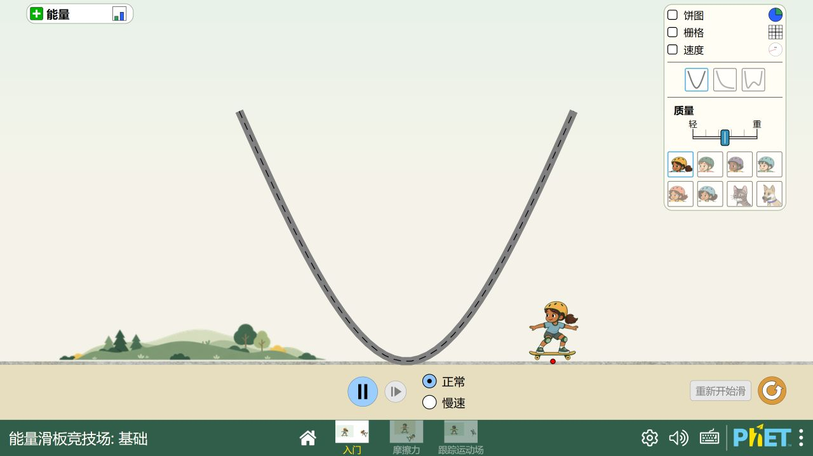

<!doctype html><html lang="zh-CN"><meta charset="utf-8"><title>科学小岛 · PhET 实际界面对比</title>
<style>*{box-sizing:border-box}body{margin:0;background:#f5f3e9;color:#284538;font:15px/1.65 "Microsoft YaHei",Arial,sans-serif}main{max-width:1440px;margin:auto;padding:32px 28px 40px}header{display:flex;justify-content:space-between;align-items:end;border-bottom:1px solid #bdcbb7;padding-bottom:20px}h1{font-size:30px;line-height:1.2;margin:0 0 8px}header p{margin:0;color:#637362}small{color:#637362}section{margin-top:24px}h2{font-size:20px;margin:0 0 10px}.pair{display:grid;grid-template-columns:1fr 1fr;gap:16px}figure{margin:0;background:#fffdf4;border:1px solid #c2cbb8;border-radius:12px;overflow:hidden}figcaption{padding:7px 14px;font-weight:bold;background:#e9eada}figure.after figcaption{background:#315d4b;color:#fffdf4}img{display:block;width:100%;height:auto}footer{margin-top:24px;padding-top:16px;border-top:1px solid #bdcbb7;color:#637362}a{color:#315d4b}nav{display:flex;gap:10px;margin-top:20px}nav button{font:inherit;padding:8px 20px;border:1px solid #8da588;border-radius:24px;background:#fffdf4;color:#315d4b;cursor:pointer}nav button[aria-pressed="true"]{background:#315d4b;color:#fffdf4}section[hidden]{display:none}</style>
<main><header><div><h1>科学小岛 · 森林运动俱乐部</h1><p>PhET 内部 UI 更新 · 实际运行截图</p></div><small>2026-09-30 · 相同 1280×720 画面尺寸</small></header><nav aria-label="选择对比实验"><button data-index="0" aria-pressed="true">推箱子</button><button data-index="1" aria-pressed="false">拔河</button><button data-index="2" aria-pressed="false">滑板</button></nav>
<section><h2>01　推箱子 · 人物、道具与操作区</h2><div class="pair"><figure><figcaption>改造前</figcaption><a href="screenshots/before-push.png"></a></figure><figure class="after"><figcaption>改造后</figcaption><a href="screenshots/after-push.png"></a></figure></div></section>
<section><h2>02　拔河 · 两队伙伴与森林运动场</h2><div class="pair"><figure><figcaption>改造前</figcaption><a href="screenshots/before-tug.png"></a></figure><figure class="after"><figcaption>改造后</figcaption><a href="screenshots/after-tug.png"></a></figure></div></section>
<section><h2>03　滑板 · 六位运动伙伴与实验面板</h2><div class="pair"><figure><figcaption>改造前</figcaption><a href="screenshots/before-skate.png"></a></figure><figure class="after"><figcaption>改造后</figcaption><a href="screenshots/after-skate.png"></a></figure></div></section>
<footer>以上均为本地浏览器真实运行截图，可点击查看原尺寸。推箱子与拔河包含科学小岛宿主；滑板为实验直达页面。四个 PhET 模块、13 个页面和六级面积挑战保持可用。模拟由 PhET Interactive Simulations / University of Colorado Boulder 提供；视觉改编：科学小岛。</footer></main><script>const sections=[...document.querySelectorAll("section")],buttons=[...document.querySelectorAll("nav button")];function choose(n){sections.forEach((s,i)=>s.hidden=i!==n);buttons.forEach((b,i)=>b.setAttribute("aria-pressed",String(i===n)))}buttons.forEach((b,i)=>b.onclick=()=>choose(i));choose(0);</script></html>
